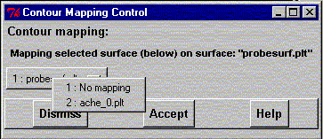

**************************************************************************
Contour Mapping Widget
Leif Laaksonen CSC 1998
**************************************************************************
This is the contour mapping widget. Through this widget you can control
the mapping (colouring) of an isocontour surface according to the grid values
of an other grid (*.plt) file. The colouring can be scaled according to any
grid value range.

The steps to do:
- Read the atom coordinate information (through import coordinates) for
your molecular system.
- Open the contour manager widget (if it is not open alredy).
- The contour data files are usually *.plt files (you can of course
use your own file name extension). Click on the "Browse" button
to open the file browser to see the *.plt files.
Double click on the file (or a single click and then
press the "Open" button) to select the file.
- Press the "Import file" button to read in the grid data to gOpenMol.
- Repeat the previous steps to read at least one more grid (*.plt) files.
- Click on the radio button for the file for which you want to generate
the isocontour surface.
- Click on the "Mapping" button to open the "Mapping control widget".
This you already did because you got this help text.
- Click on the option menu button to select the file from which the
colouring (mapping) will be taken. Finish by pressing the "Accept"
button.
- Write the isocontour value into the input field (starting upwards).
If you want to apply an other colour range than the default fill in
on the same line the min. and max. values for the range.
The colouring will be from min (blue) to max (red). If the values are
filled from max. to min. the colouring will be the opposite.
- Press the "Apply" button"!
Surface details:
- If you want the surface to be smoothed press the "Details" button.
- If you want to make the surface transparent press the "Details" button.
- If you want to switch between mesh and solid type of surfaces press
the "Details" button.
- If you want to turn a particular surface off press the "Details" button
Please observe that the two grid files have to have the same number of
grid points in the x, y and z directions and the grid data has to be defined
in the same x, y and z space for the both grid files.
If you don't know the grid space you can run the format to unformat
*.plt file converter (pltfile) in the bin/ directory.
You can change either the isocontour value, colour, smoothing by
pressing the "Details" button for the chosen isocontour value.
**************************************************************************
LUL/1998
**************************************************************************